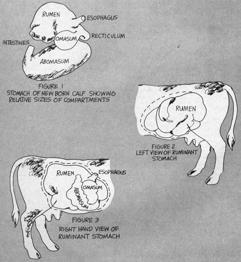
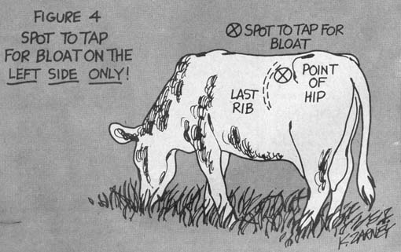

Beginning farmers usually do pretty well with gardens, chopping wood and building outhouses . . . but the birth of that first calf or litter of pigs generally sets 'em back a couple of notches. R.J. Holliday DVM, a veterinarian in Missouri and MOTHER contributor, intends to remedy the situation. His tool? A new handbook precisely designed to explain all the animal facts of life in language that new back-to-the-landers can understand.
MOTHER is serializing the manual as Dr. Holliday completes each chapter and here's installment No. 4: COMMON SENSECATTLE NUTRITION
When I was a youngster, I thought my Dad had some strange ideas about livestock nutrition. He actually expected me to pick out the best parts of each bale of hay, feed them to the family cow . . . and give only the weedy leftovers to my horse!
Naturally, this didn't work out too well in practice because I tended to exactly reverse my father's feeding priorities. Thanks to me, the horse stayed sleek and fat . . . and, surprisingly, the cow continued to give plenty of milk and raised a healthy calf every year too.
I didn't know it at the time, but the reason Old Jersey got along as well as she did on the relatively poor hay I fed her was because she was a ruminant, or cud-chewing animal . . . and ruminants are endowed with a very complex, unique digestive system designed to extract - in ways we do not yet fully understand - nutrition from cellulose.
Most people have heard that a cow has four stomachs. The bulk of the evidence now available, however, tends to support the theory that she really has only one . . . which is divided into four compartments: the rumen or paunch, the reticulum or honeycomb, the omasum or many plies, and the abomasum or rennet. An inspection of the lining of these different compartments will graphically show the origin of the common names.
Only the abomasum is a true glandular stomach that secretes gastric juice. The other compartments function mostly as storage areas, although some absorption of nutrients does take place in them. In a young ruminant - say a calf - on a diet of milk, the first three stomach compartments are smaller than the abomasurn (Figure 1). When milk is taken, it bypasses the rumen, reticulum and omasum and goes directly into the true stomach.
As the calf grows and begins to eat bulky feed, such as grass or hay, the relative sizes of its stomach compartments begin to change markedly. In an adult the rumen will contain about 80 percent of the total stomach volume, the reticulum about 5 percent, and the omasum and abomasum about 7 or 8 percent each. The total volume will be easier to visualize if you consider that the rumen alone of an average-sized cow holds about 50 gallons (Figures 2 & 3).
If you'll watch cattle on pasture, you will note that they graze rapidly and swallow the forage with little mastication or chewing taking place. The ingesta goes directly to the rumen or paunch. When this paunch is filled to the cow's satisfaction, she will seek a quiet, comfortable place in which to "ruminate" or "chew her cud".
In the first stage of this cycle of rumination, a mass of previously swallowed forage (a cud) is belched-up or regurgitated from the rumen to the mouth. The exact mechanism by which this is accomplished is thought to be a combination of reflex pressure changes in the esophagus and reverse peristalsis. In the mouth, the cud is thoroughly chewed and mixed with copious amounts of saliva, and again swallowed to return to the rumen or reticulum where most of it will begin its journey through the remainder of the digestive system. After a short pause the cycle is repeated, and adult cattle on pasture may spend upwards of 10 hours a day ruminating.
The rumen and reticulum also experience continuous rhythmic contractions at the rate of a little over two per minute. These contractions serve to thoroughly mix the rumen and reticulum's contents and thus aid the fermentation process. If you will place your hand firmly into the little dip high in the left flank of a cow, you can actually feel these wave-like contractions as they occur (Figure 4). You can also watch the progress of the cud as it moves up the esophagus when the animal is ruminating.
Functionally, the rumen is best visualized as a large mixing and fermentation vat in which actual digestion of the cellulose is carried out by the rumen bacteria. Rumen microflora are so important to digestion in the rumen that it has been said that ruminant nutrition is nothing more than providing the ideal media for the growth of these bacteria. "Feed the rumen bacteria, they will feed the cow" may be an oversimplification but it does serve to emphasize the bacteria's importance. The microflora's accomplishments are threefold:
(1) The relatively indigestible cellulose in the plant fibers is broken down into a form of carbohydrate that can be absorbed and utilized as an energy source. For the technical minded, the cellulose is reduced to volatile, short-chain fatty acids (mostly acetic, propionic and butyric acids).
(2) Poor-quality proteins are utilized by the bacteria and changed into a higher-quality microbial protein with a better balance of the essential amino acids (protein building blocks). This is possible even when total feed protein is low, if a source of non-protein nitrogen is available, e.g., urea or water soluble nitrates.
(3) The rumen bacteria synthesize generous amounts of water soluble vitamins of vitamin C and the B-complex group (and possibly even several unidentified growth factors).
Basically, cattle nutrition is nothing more than the provision of properly balanced amounts of protein, fats, carbohydrates, vitaamins, minerals and water to support the level of meat or dairy production that we desire. In the wild state, where the demands for production are slight, all necessary nutrients are available in the native grasses.
The increased demands for heavy dairy and beef production brought about by domestication however, have not only caused an increase in the feeding of highly concentrated feeds, but has also brought about a genetic change in the animal's ability to produce meat and milk. Even with this genetic change we must remember that cattle are basically grazing animals . . . and the more drastic the deviation from their normal diet, the more we can expect problems with their overall health and productivity.
Today, feedstuffs for cattle can be grouped into three categories: roughages, grains, and concentrates.
Roughages are essential for good ruminant digestion because the rumen does not operate efficiently unless enough bulls is present. The best roughage is a good mixed grass and legume pasture growing on fertile soil that is high in organic matter. Such pasture normally is all the feed that moderately productive cattle require. In the wintertime, high-quality mixed hay will produce results almost as satisfactory as pasture.
Silage or haylage is another good source of quality roughage for cattle. These feeds - fermented in large upright silos or in excavated trench silos - are, in fact, excellent but require somewhat more equipment and expense than is practical for the small homestead.
If you desire a somewhat higher level of production from your dairy animals, you'll have to add some grain to their rations. Corn, oats and barley are the most commonly used since they're the most palatable to cattle. Wheat, rye, ansd grain sorghum are also widely combined with other grains.
For an extremely high level of production, you'll also find it necessary to feed such highly concentrated protein sources as soybean oil meal, linseed meal or cottonseed meal. If all the grains you give your animals were organically grown, these products could probably be eliminated. At present, however, they're valuable agents with which to balance the protein requirements of most commercial rations.
Unless the roughages and grains you feed are grown on highly fertile organic cropland, you will almost certainly need to give your cattle a supplemental source of minerals. Trace minerals can be provided by adding sea-kelp to the ration and ground limestone is a good source of calcium. Phosphorus is available in steamed bone meal. For animals too young to have rumen function, you're well advised to add a source of B-vitamins, along with small amounts of cod liver oil and wheat germ oil.
Needless to say, your cattle should have access to loose salt and a continuous source of fresh clean water of moderate temperature at all times.
Before listing some sample rations for different classes of cattle, let's examine some general rules of thumb that apply to cattle feeding.
(1) If you're feeding good-quality legume hay or mixed hay that is at least half legume, you can reduce the amount of grain mixture being offered. Poor-quality hay will require that you feed more grain.
(2) Growing animals need more protein in their ration. However, animals being raised for future breeding stock should never be allowed to become as fat as animals being fed for slaughter. Being overly fat when young impairs their future breeding potential.
(3) The amount of grain mix fed to milking dairy cows will depend on the quality of the roughage they receive and on the amount of milk they produce.
(4) Start cattle on any grain ration slowly. Feed about 10 percent of the anticipated full feed at first, and gradually increase the amount of grain offered until the maximum quantity is being fed in 10 days to three weeks. Use the same rule when making any drastic change in the ration's ingredients.
(5) Any ration may need to be adjusted up or down to accommodate the different levels of productivity found in individual animals.
CREEP FEED FOR NURSING CALVES
A calf creep is a self-feeder surrounded by a fence that allows the young cattle access to the feed while excluding the adults. In addition to pasture or good-quality mixed hay, self-feed feed nursing calves a mixture of 60 lbs. ground corn, 30 lbs. ground oats and 10 lbs. soybean oil meal.
DAIRY HEIFERS AND FUTURE BREEDING STOCK 6 TO 18 MONTHS OLD
Feed pasture or good-quality mixed hay plus three to six lbs. of the following mixture per day: 50 lbs. ground corn, 25 lbs. ground oats, 12 lbs. wheat bran and 12 lbs. soybean oil meal.
DRY COWS AND FRESHENING COWS AND HEIFER.
Pasture or good-quality mixed hay plus three to six lbs. of the following mixture per day: 40 lbs, ground corn, 30 lbs. ground oats, 25 lbs. wheat bran and 5 lbs. linseed meal.
MILKING DAIRY COWS
Pasture or good-quality mixed hay plus a daily eight to 15 . lbs. - depending on milk production - of one of the following mixtures:
(1) 50 lbs. ground corn, 25 lbs. ground oats, 10 lbs. wheat bran and 15 lbs. soybean oil meal.
(2) 40 lbs. ground corn, 25 lbs. ground oats, 15 lbs. wheat bran and 20 lbs. linseed meal.
(3) 55 lbs. ground ear corn, 25 lbs. wheat bran, 10 lbs. soybean oil meal and 10 lbs. linseed meal.
DAIRY COWS ON GOOD-QUALITY ALFALFA HAY
Six to 12 lbs. per day of a mixture of two parts ground corn and one part ground oats.
BEEF COWS ON PASTURE
No other feed is necessary.
WINTERING BEEF COWS
Good-quality roughage is sufficient. If only medium-grade hay is available, each animal should receive up to one lb. linseed meal or soybean oil meal, or two to four lbs of oats or corn per day.
FATTENING YEARLING CATTLE.
Alfalfa hay and corn self-fed. If mixed hay is used, self-feed corn plus one to one-and-one-quarter lb. soybean oil meat per day.
With proper attention to nutrition, sanitation and management you should have very few digestive upsets to contend with in your cattle. Diarrheas caused by over feeding or by starting on feed too quickly can often be controlled by the drastic reduction of feed for a few days. In severe cases, call your vet.
Bioat is a severe distention of the rumen with gas. It is most common when animals are grazing on predominantly legume pastures. The condition can often be avoided by having a mixture of grasses in the pasture or by feeding the animals some hay before turning them onto the legume pastures. Treatment of severe cases is aimed at releasing the pressure. This can be done by passing a stomach-tube (the size of a garden hose) into the rumen or by inserting a large diameter needle or a knife directly into the rumen. The proper site for "sticking" is on the LEFT SIDE ONLY as shown in Figure 4. Except in emergencies, these procedures are best left up to your vet.
(EDITOR'S NOTE: The treatments described above by Dr. Holliday are fairly drastic and should only be resorted to in extreme cases of bloat. Minor bloat is generally nothing to get excited about and moderately severe bloat can usually be cured by drenching a cow with a mixture of either (1) a pint of linseed oil in a pint of water or (2) one cup of kerosene with a pint and a half of water. Shake either mixture well in a big ginger ale bottle, hold the stricken animal's head up and nose closed and stick the neck of the bottle down the side of the cow's mouth between her lip and the outside of her teeth [don't let her chomp on the glass]. Stroke the animal's throat to make her swallow. Call a vet and call him fast for major bloat that puts-or threatens to put - a cow down.)
Occasionally cattle on poor quality, highly fibrous roughage will develop an impaction of the rumen. In this condition parts of the stomach are packed full of undigested roughage. The animals will be off feed and it will be impossible to detect any contractions. Drenching with a quart or two of raw linseed seed oil will usually loosen the impacted mass.
Because they do not chew their food properly the first time around, cattle regularly swallow all sorts of foreign objects including nails, stones and pieces of wire. These heavier objects generally fall directly into the reticulum where they tend remain. Under certain conditions sharp items will puncture wall of the reticulum and migrate into the area of the heart. Hardware Disease, as this condition is called, can best be p vented by keeping such objects out of the feed and the feeding area.
Always remember that cattle feeding is an art and not a science even though modern agriculture has fallen into trap of believing otherwise. Scientists observe a profitable cattle operation, and then attempt to measure and duplicate all of the hundreds of variables - such as genetics, rations and housing - involved. The cattle that are then raised under "identical" conditions often fail miserably to have even a resemblance profitable herd The reason is that Science has never tried = . measure the beneficial effects of a good herdsman's attentions to his animals.
If a person has a "way" with plants we say he has a "green thumb". I know of no word with the same meaning that can be applied to a person who has a way with animals. I can only say that an individual who does have this trait will be successful with animals and the best word I can come up with to describe such a person is "herdsman".
The old Greek, Plutarch, knew this truth almost two centuries ago, of course, when he wrote: "Nothing fattens the horse, so much as the eye of its master."
|
 |
 |
|